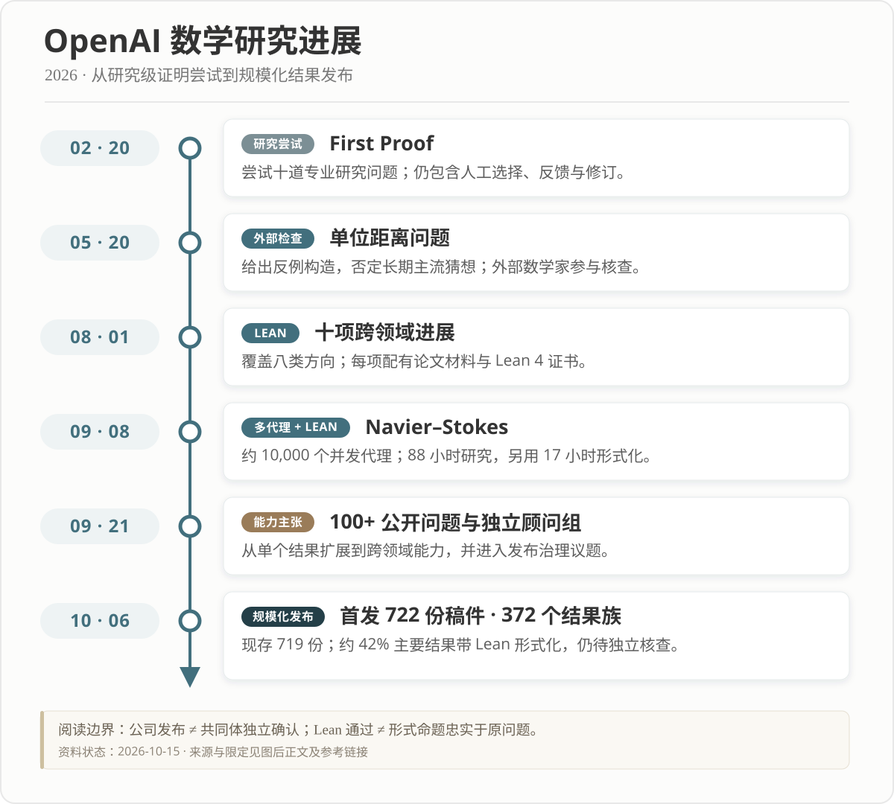

· Notes ·
往何处去——数学的毁灭与重生
英文版由大语言模型根据中文原文翻译。
序
2026年5月至今，我对 AI 数学能力的判断被连续改写了几次。此前，因为从事 AI 研究，我已经重度使用大模型写代码、搜索资料和讨论研究想法。五月，一位朋友告诉我，ChatGPT的数学能力进步了很多，我便开始让它尝试研究中的问题。最初，我惊讶于它能做出普通博士生没有做出来的问题；两个月后，它陆续给出了我所熟悉的领域中悬而未决数十年的几个公开问题的解答，我开始怀疑，它可能已经超过了这个领域的全部人类专家；再后来，OpenAI 公布的一连串结果把这种冲击带到了整个数学界，数学的“AlphaGo 时刻”已经到来甚至悄悄过去了。 与此同时，关于 AI 与数学的讨论迅速升温，各种判断相互碰撞，借助 AI 快速生产数学文章的人也越来越多。成果、主张、争议和未经充分核查的输出混杂在一起，很难看清它们究竟意味着什么。在追赶这波变化、用 AI 完成了一些数学问题的研究之后，我也想暂时停下来，从自己的经历出发，讨论 AI 对数学、数学家和后来者的影响。
对我这样一个天赋普通的数学科研工作者来说，真正感到 AI 能承担严肃研究任务，便是在今年五月。此前，模型的幻觉和推理错误一直让我难以信任它；到了五月，我在实际使用中明显感到，它已经能够持续推进一些研究级问题。我首先交给它的，是课题组中包括我和几位读博时的师兄在内、曾花费数月却没有解决的几个问题。这些问题的背景相对完整，困难也很明确，后来陆续都得到了 GPT 给出的解答。有的只需在 Plus 版本中进行几轮对话，一两个小时便有了结果；有的则需要使用 Pro 进行数十轮尝试，断断续续花上三天到几周。
这种体验并不全是愉快的。我一边和它讨论，一边学习、提供材料、调整指令；可一旦进入连我也不熟悉的技术深处，我能做的往往就只剩下让它继续研究。表面上，我仍然在主持对话，实际决定证明走向的能力却越来越不在我这里。这改变了我对自己在数学研究中所处位置的认识。
我原本以为，是我在使用 AI 协助我做数学；后来我越来越怀疑，也许是 AI 在做数学，而我只是在为它寻找问题、补充背景、整理材料和检查输出。
我对 AI 的感情因此始终矛盾。许多过去想不通的问题忽然有了解决的可能，我当然惊喜；可如果最关键的构造、路线和证明都是它给出的，那么“这是我的数学成果”究竟还意味着什么？随着它的证明能力远远超出我能够独立完成的范围，恐惧逐渐压过了惊喜。研究似乎变得更容易了，我作为研究者的主体性却在减弱。
到了七月，我借助 AI 完成了我的数学研究领域内几个在我看来最重要、也最困难的公开问题的解答。我甚至已经想不到在我们领域比它们影响更大、难度更高的公开问题。我感觉自己在这些解答中起的作用很小：它们确实需要远超先前的对话轮次和时间，我也不断从不同角度提供提示和思路；但最后的突破往往来得十分突然，像是 GPT 在某一刻“一朝顿悟”，一下子给出了完整的答案。
当然，得到答案并不意味着工作结束。当时它生成的证明可读性还很差，我花了大量时间梳理结构、简化论证、补充细节，并不断追问思路和动机，才把它们整理成我认为领域专家能够理解和检查的数学成果。这些劳动是真实的，只是它们与我过去想象的“独立发现一个证明”已经很不一样。而且我相信，这些劳动很快也将被AI超过。
八月以后，OpenAI 公布的一系列成果进一步强化了我的判断：至少在解决我熟悉的那些数学问题上，AI 已经占据了明显优势，我也越来越难相信某一位人类专家仍能稳定胜过它。与此同时，它的论文写作能力也在改善。给出合适的提示和写作要求后，一篇稿件的大部分工作已经可以由它完成；留下的常常是术语、衔接、组织和表达上的细节。这件事很有意思：模型已经能够跨过我无法跨过的推理障碍，却仍会在一些不难修正的写作细节上显得生硬。我很难相信，这些细节会构成长久的障碍。如果 AI 公司继续投入资源，写作、选题乃至理论组织也可能很快发生类似的变化。
最近使用 dots 功能时，我又感到了一次更深的变化：它已经能够围绕一个数学问题持续运行数天，完成研究并交回证明。我甚至不再需要守在聊天窗口前，通过一轮轮对话补充提示、推动推理，才能得到一个结果。过去，我还能在反复讨论中感到自己参与了证明的形成；如今，我越来越像是在交代一个愿望，然后等待它带着结果回来。它变成了一个完完全全的“许愿机”。这使我毫不怀疑，随着 AI 继续发展，从文献搜集、问题分析、路线探索和证明构造，到形式化验证、结果整理和论文写作，它将能够独立承担一篇数学论文的全部研究流程。我所面对的替代，也因此从一项最核心的证明能力，扩展到了自己作为数学研究者的整套工作。
到了这一步，数学的“AlphaGo 时刻”无疑已经过去了。迄今为止，我还没有遇到一个人告诉我，他证明出来的结果，AI 无法独立证明出来。传统数学研究的价值、数学家的角色，以及社会维持这一职业的理由，都将被重新审视。数学研究也将迎来它的一次毁灭与重生。
我想讨论三个相互关联的问题：宏观上，旧的研究方式会怎样解体，数学又可能以什么方式发展；对我个人而言，应该坚持、改变和放弃什么；对后来者而言，还要不要把基础数学当作职业，又应该怎样学习和参与数学。
第一部分 宏观：这一次为什么不同
一、这不是又一次数学内部的“危机”
陶哲轩在 Mathematics in the age of AI 中，把当前变化与二十世纪初的数学基础危机作了对照。这篇文章基于他在 2026年7月24日的 ICM 公开报告，随后在8月形成预印本。
数学史上不缺少深刻的动荡。围绕无理数、非欧几何、集合论悖论和数学基础的讨论，曾不断改变人们对数、空间、无穷与严格性的理解。但这些变化主要发生在数学内部。旧概念出现困难，数学家创造新概念；旧证明标准不够清楚，数学家重建基础。危机过后，从事数学的主体仍然是人，新的理论仍需要人去学习、传授和发展。AI 带来的冲击则可能改变谁在生产数学：如果机器能够独立承担越来越多的发现和证明，数学是否还需要以人类数学家为主要生产者？陶哲轩把这次受到检验的价值与实践具体列为：
“what we consider a contribution to be, what we reward, what we regard as understood”
也就是，什么算作贡献，什么值得奖励，什么才算理解。当年的争论迫使数学家说清真理的基础；如今，AI 则迫使我们说清研究的目的，以及发现、理解与人的功劳之间究竟是什么关系。
短短两个月后，这些前瞻思考已经变成身处数学研究中的人不得不面对的迫切问题。
讨论AI会如何影响数学研究，必须先分清数学知识、数学家的职业，以及多年形成的数学科研制度。它们的命运可能走向不同方向。
特别重要的是，这场变化的主动权并不掌握在所谓的数学共同体手中。模型是否继续变强、是否公开、价格多高、能够调用多少算力、能否长期自主运行，很大程度上由技术公司、资本、政策和更广泛的社会竞争决定。数学家可以制定论文规范、决定期刊接受什么，却不能决定模型停止进步，也不能要求其他学科或普通用户必须通过传统数学共同体获得数学能力。在这种条件下，说服政府和机构按原有方式资助纯数学研究，也可能变得更加困难。
此外，这场冲击的程度还取决于数学之外的变化。如果类似能力扩散到物理、化学、工程、编程、教育和大量其他职业，高校、科研经费、就业与知识权威都可能一起重组。数学家的命运只是其中一部分。我们很难假定其他制度保持不变，再单独推算未来还需要多少数学家。
二、AI 的数学能力跨过了什么门槛
“AI 已经超过人类”是一句过于笼统的话。证明能力、概念理解、选题品味和论文写作，是不同的方面。在证明生产的速度、规模和跨领域覆盖上，最前沿的 AI 系统已经把人类数学家远远甩在身后。证明能力曾是评价数学家最重要的标准之一。这种能力也曾是极度稀缺的，拥有这种能力的人会被视为天才，数学研究因而有了一种英雄史诗般的叙事。


2 月：研究级证明尝试。 OpenAI 在 First Proof 提交报告中公开了十道专业研究问题的尝试，也说明了人工选择、专家反馈和再次修订的参与。这些过程限制了我们把结果直接当作独立能力评测的程度，但任务本身已明显不同于短答案和竞赛题。
5 月：独立寻找反例路线。 OpenAI 公布了对 Erdős 平面单位距离猜想的反例构造。其说明称，内部通用模型引入了代数数论中的工具，给出多项式量级的改进，并由外部数学家检查。页面收录的 Noga Alon 与 Tim Gowers 的评价，分别强调了结果的分量，以及模型在寻找新反例方向上的表现。
8 月：跨领域结果与形式证书。 十项数学与理论计算机科学进展横跨球堆积、编码理论、群论、算术电路、算子代数、量子复杂性、格密码和极值组合。OpenAI 同时发布论文材料和 Lean 证书，将研究结果的生成、写作与形式检查进一步联系起来。
9月：大规模代理协作。 OpenAI 公布针对 Navier–Stokes 千禧年问题的证明主张与 Lean 形式化，称其构造解决了官方表述中 C、D 所涉及的带光滑外力情形。Clay 数学研究所9月11日的公告使用了“apparently been settled”的表述，同时说明成果评估与归属有其程序。这些材料还介绍了大规模并发代理参与的研究过程，显示出与个人或小组长期推进一个问题不同的研究组织方式。
10月：结果以洪流出现。 OpenAI 发布 Sharing AI progress in mathematics 和 openai/math 仓库。首发为722份稿件；10月7日的修订记录说明，其中3份稿件被撤回。截至本次修订核查的10月24日，仓库列出719份稿件、372个结果族，约42%的主要结果带有 Lean 形式化。一个结果族可以包括主要结论、配套论证、推论和不同证明，因此稿件数不能直接当作独立公开问题的数量。仓库也明确说明，不同结果处于不同的验证阶段，部分未形式化结果可能仍有问题。
这些材料被比喻为“核爆”和“洪流”。Le Monde 对 Hugo Duminil-Copin 的报道称，其中16个问题直接关联他的研究；其中一个问题涉及一整套由13篇文章展开的研究计划。
Hugo Duminil-Copin 在报道中的原话是：
“They have annihilated my field of research”
这几乎终结了他预期的职业生涯。OpenAI 称，内部模型在这一轮评估中尝试了约四千个问题；按公司给出的算力折算，平均每项结果约相当于使用该内部模型进行三小时 ChatGPT Pro 级别的思考。这一数字描述的是该轮评估中的推理算力，不能直接换算成公开产品的表现或研究的全部成本。
即便保留这些区分，效率差距仍然惊人。其中一些难题曾让出色的数学家投入多年，一次重大突破就可能定义一个人的研究生涯。以个人的天赋、灵感和多年积累为中心的数学英雄叙事，正在被新的生产方式改写。这已经是数学的工业革命：手工作坊式的研究遭遇了机器生产的绝对效率。如果这种能力继续提升并广泛、低成本地开放，那么从产出数学证明的角度看，传统依靠个人缓慢推进问题的数学家必将被淘汰。
这种冲击需要一定时间传导，但留给数学家的时间可能并不多。引以为傲的“证明难题”不再是稀缺能力，那么，数学研究作为一种职业还有存在的意义吗？
三、证明丰裕会怎样改变数学家的职业
整个过程中，陶哲轩是最积极参与讨论的数学家之一。他一直积极推动并尝试使用 AI 进行数学研究，同时批评某些使用和发布方式。在 10月10日的《Math 2.0》说明中，他将当前局面的一部分归因于“excessive emphasis on automated solving of open problems by AI”，并提出用 AI 支持数学共同体，以及数学理解在现实应用中的作用。但这一说法也引来了很多争议，很多问题本身早已存在，但数学界闭口不谈，假装不存在。AI现在只是将它们放大推到了焦点之中，并不是AI导致的。
我也并不认为共同体对这些目标的坚持，就能阻止机器数学取代传统数学研究范式和数学家。数学家们需要重新思考自己的角色和价值，寻找新的方式来参与数学研究。
我倾向于认为，以证明和论文生产为主要职责的基础数学岗位会减少。与此同时，参与数学的人却可能增加。AI 降低门槛以后，工程师、医生、程序员、学生和业余爱好者都可能带着自己的问题进入数学；过去因文献、训练和技术门槛而难以参与的探索，也可能向更多人开放。职业数学家减少，与数学活动更加广泛，并不矛盾。
进行纯数学研究的人，几乎都就职于高校或政府资助的研究机构。高校岗位还取决于学生数量、课程需求、公共财政、大学定位和产业结构。教育部的《2025年全国教育事业发展统计公报》显示，中国各种形式的高等教育在学总规模为4872.57万人，毛入学率为61.3%，眼前的教学需求仍然庞大；国家统计局公布的 2025年人口数据则显示，全年出生人口为792万，人口总量比上年减少339万。
出生人口的持续减少，会在相应年龄队列进入大学时给生源带来压力。预计18年后，即使所有人都上大学，高等教育在学规模也将腰斩。如果生源下降，而校舍、师资等固定成本难以同步调整，一些高校就可能面临生均成本上升、收入承压和布局收缩；这些压力必然传导到纯数学岗位。
AI 对研究劳动的替代，与人口变化对高校生源的影响，可能在未来十几年逐渐叠加。如果 AI 同时改变其他行业，社会对大学学历、课程和科研的需求本身也会变化。未来有多少数学岗位，取决于社会需要什么样的数学工作，以及愿意为之投入多少资源。要讨论这个问题，先要回顾社会为什么曾经需要职业数学家。
四、社会为什么还要支持职业数学家
数学远比现代大学古老，“职业数学家”却是特定历史条件下形成的角色，并非自古如此。放在历史的长河中，一种职业的消失太正常了。近代研究型大学、学术期刊、博士训练、同行评议和国家科研资助，逐渐把数学研究组织成一种能够持续获得薪酬、职位和职业发展机会的工作。
韦伯在 以学术为业 的英译本开头，就把理想拉回到生计：
“it is extremely hazardous for a young scholar without funds to expose himself to the conditions of the academic career.”
这句话出现在对德国无薪私人讲师与美国受薪助教制度的比较中。他提醒年轻人，学术追求要依托具体的职位和收入安排；知识的价值，并不保证从事它的人能够靠它生活。
二战前后，公共资助又为基础研究提供了新的制度支撑。布什在 1945 年的 科学：无尽的前沿第三章中写道：
“But basic research is essentially noncommercial in nature. It will not receive the attention it requires if left to industry.”
他的理由是，基础研究的收益具有长期性和不确定性，商业激励不足以保证它获得充分投入。1950 年成立的美国国家科学基金会（NSF），是一家联邦科研资助机构，其法定宗旨开头就写着：
“To promote the progress of science; to advance the national health, prosperity, and welfare”
科学进步由此与公共健康、繁荣和福利联系起来。这套资助逻辑要求科学说明自己的公共价值，也为尚无直接用途的研究保留空间。
社会支持职业数学家，有几种彼此联系的理由：大学需要教学和培养下一代，科学与工程需要可靠的数学知识，基础研究可能带来尚不可预见的长期收益，而证明、判断与传承又需要多年训练。当这些工作主要依靠专业研究者完成时，支持数学研究与维持一支职业数学家队伍，往往是同一项投入的两个方面。
过去，教学、培养后继者、生产可靠知识与长期探索，经常由同一支职业队伍承担。AI 正在松动这些目标与原有职业安排之间的联系。数学仍然有价值，并不自动意味着社会还需要维持相同数量的职业数学家，以相同方式生产论文和定理。公共经费可能继续投向数学，甚至有所增加，却更多用于算力、模型、知识库和少量研究团队。职业数学家的规模和分工，会取决于以下几个因素。
1. 人类的理解是否仍是社会愿意投入的目标
《人工智能与数学莱顿宣言》是一份共同体倡议，由2025年9月莱顿大学 Lorentz Center 会议后形成的跨学科工作组起草，参与者包括数学家、计算机科学家和科学史、哲学研究者。它在价值部分写道：
“Mathematics produces not only a body of results, but also understanding, clarity, and judgment”
它主张保留的，是数学活动带给人的理解、清晰性和判断力。另一个相关团体，是独立数学与人工智能顾问组（AGMAI）；该组由数学家组成，向 AI 公司提供成果发布等方面的建议，独立于这些公司运作。其负责任发布建议写道：
“In particular, AI labs should provide significant support, including funding, to help develop this understanding.”
这把实验室的责任从“交付结果”延伸到了支持人类理解结果。两个倡议都在保护数学的共同体传统，但它们提出的是价值选择，不能单凭机器能否生成证明来裁决。
这里涉及到一个核心前提，或者算是每个人的信仰，数学是否一定需要被人类理解。AI 产生的数学成果，可能在形式上是正确的，但人类是否能够理解其意义、应用和前提，仍然是一个开放问题。我不认为所有机器产生的数学，都必须先被人完整理解才能继续发展。如果一个定理服务于后续形式推理、算法设计或科学计算，有清楚的声明、依赖和可检查证明，它可以先由机器使用，再由人逐步消化。要求每一步都等待人读懂，会使有限的人类注意力成为发展的瓶颈。
但如果社会仍希望人能够理解科学解释、判断重要应用的前提，并把知识传给下一代，就需要为这种理解付出成本。这可能意味着资助少数重要理论的整理、讲授和独立研究，而非要求人追完机器生成的一切。它能支持一部分数学职业，却不能保证今天的岗位规模会继续维持。
2. 基础数学的长期公共收益是否仍值得投入
我认为政府仍有理由支持基础数学。AI 改变了发现知识的方式，却不会自动消除基础研究的长期价值。即使技术公司愿意投资有利于模型训练或产品竞争的数学，也不能据此认为所有值得研究的方向都会获得充分支持。尤其当研究方向更多由公司的产品需求、模型基准和宣传效果决定时，难以展示、短期无利可图的方向可能被忽略。公共资助可以为这些探索保留空间，维护研究的多样性与自主性。
资助目标也需要说得更清楚。若主要追求更多可靠结果，就应比较不同组织方式的成本与效果；若还包括教育、文化、长期探索和人的理解，就应直接说明这些价值，并据此评价工作。以论文为主要 KPI 的学术体系必将重塑。
这种分工的变化已经有迹象。OpenAI 在 10月15日的发布更新中宣布，向由私人基础科学慈善机构 Simons Foundation 管理的新计划投入500万美元，支持数学家理解和发展 AI 产生的结果，原话是“help mathematicians examine, understand, and build on results produced by AI”。这个例子说明，经费可以支持成果的消化与再发展，而不只支持最初的证明生产。但显然，相比于政府对高校的基础数学研究的投入，这是九牛一毛。
3. 模型访问与知识的独立维护
数学能力怎样公开、价格多高、能够调用多少算力、能否持续使用，会直接决定谁能参与研究。如果前沿能力集中在少数公司内部，大学和独立研究者就可能越来越依赖这些公司的许可。
独立数学与人工智能顾问组（AGMAI）关于模型访问的讨论把这种格局称为“two-tier system”，并警告，内部模型可能让实验室远远跑在共同体之前，公开模型的访问成本也可能扩大机构之间的不平等。公共投入因而还可以帮助保留更广泛的研究能力，使大学和独立研究者能够检查、使用和发展知识。
这种投入可以包括共享算力、开放工具、公共数学库和相对独立的研究机构。这些条件直接影响研究者能否提出自己的问题、检查已有结果，并持续开展不由公司预先选择的探索。
能力能否被独立使用，还取决于知识能否被核查、维护和传承。声明、依赖、版本和来源要能够追溯；重要理论需要被整理进可学习、可复用的知识体系。如果一个领域只剩极少数能够独立判断的人，一旦他们离开，或所依赖的模型不再可用，领域就可能失去继续检查和发展的能力。这也是支持独立审查、教材、课程和后继人才培养的理由。
五、数学可能怎样重生
数学作为一种知识生产和公共活动，可能在旧的职业制度松动时获得新的发展空间。我所理解的“重生”，体现在研究的重心、探索的尺度、参与者的范围和知识的组织方式上。
1. 从攻克单个难题，到探索更大的理论空间
如果发现和证明能够由机器可靠地持续推进，许多过去因为时间和能力限制而搁置的方向，就可能重新进入研究范围。一次研究也不必止于一个孤立问题的答案，而可以围绕它连续展开。
可以设想，我们不只问一个猜想是否成立，还能继续追问：哪些条件真正必要，在哪些边界上出现反例，能否找到覆盖多个结论的统一结构？长程运行的模型可以围绕这些分支反复探索，把一次证明延展为一片理论的比较。值得期待的，是更多结构和联系进入可研究的范围，为新概念的形成与理论的统一提供材料。
美国国防高级研究计划局（DARPA）在2025年启动的 expMath 计划，目标包括开发“an AI co-author capable of proposing and proving useful abstractions”，同时设置对专业数学任务的评估方向。这仍是计划目标，但它把自动提出并证明有用抽象，作为一种值得专门建设和评估的研究能力。
2. 从基础数学转向应用数学
数学的重生，也可能表现为研究重心从基础数学转向应用数学。证明和推导能力变得便宜而充足之后，许多原本受限于数学技术的科学、工程和 AI 问题，便有机会被更深入地研究。把现实需求转化为合适的数学问题，选取有效的假设与模型，再把结果用于预测、设计和优化，可能成为更多数学工作者参与研究的方式。现实系统会提出新的结构和约束，应用中的失败也会暴露原有模型的边界，推动新的理论发展。数学因此可以在同其他学科和实际问题更紧密的往来中获得新的生命。MATH4AI 就是其中一例：让数学进入 AI 的机制、算法与训练过程，以理解和改进这些系统为目标。
当然，数学家在这个过程中是否能有相比于相关产业人员有独特的优势，是未知的。不过我相信有活力的数学工作者能够积极拥抱变化，适应这个转向。
3. 更多人进入数学，也带来不同的问题
证明和研究能力若能广泛、低成本地获得，工程师、医生、程序员、学生和业余爱好者，都可能带着自己的问题进入数学。过去因文献、训练和技术门槛而难以参与的探索，也可能向更多人开放。一个工程师关于系统行为的困惑、一个学生对某种图形的好奇，都可能成为一次严肃研究的起点。
参与者的增加，还可能改变什么问题受到重视、成果被怎样使用。人们可以为了应用，也可以纯粹因为好奇而研究数学，不必先把它变成一份职业。
专业共同体在这里仍有作用：提供可靠判断，向新人说明方法和标准，让正确且可核查的成果有进入的途径。我在阅读微信公众号数智之间《谁有资格发现真理？学术体制的马丁·路德时刻》时，也想到传统中介和准入壁垒受到冲击的问题。值得延续的共同体，应能够让更多人参与，也让自己的判断接受检验。
4. 让数学知识成为可以共同使用和发展的基础设施
论文之外，数学知识还可以通过公共数学库积累。一个定义、一段构造或一个证明，不仅供读者理解，也能成为后续推理可直接调用的对象。定理的假设、适用边界与依赖若能被清楚组织，人与机器便有机会沿着这些联系重新组合已有知识，探索不同理论之间的关系。
Simons Foundation 对 Lean 的介绍记录，2023年成立的非营利 Lean FRO 获得了包括 Simons Foundation International 的500万美元捐赠在内的支持。Lean 创建者 Leonardo de Moura 说：“Without this money, it would be impossible to run.”这笔投入使长期的软件开发和维护能够成为持续工作，所建设的是很多人都能使用的研究条件。
在这个基础上，我倾向于设想两套彼此联系的数学系统。一套是机器与机器之间的数学，以 Lean 等形式系统为共同语言，AI 发展数学理论、共同维护，并用于后续推理和生产实践。另一套是人类可理解的数学，类比于人类可观测的宇宙：人类仍然发展共同体能够理解、继承的数学，也从机器产生的数学中汲取营养，选择一小部分加以理解和记录。
我不认为所有机器产生的数学，都必须先被人完整理解才能继续发展。如果一个定理有清楚的声明、依赖和可检查证明，服务于后续形式推理、算法设计或科学计算，它可以先由机器使用，再由人逐步消化。两套系统可以以不同的速度发展。
重要的是两者之间能够往来。我们可以要求机器提供关键例子、结构类比或更易理解的证明，也可以把来自现实和人类好奇心的问题送入机器的研究过程。人类可理解的数学因此不断向外生长，同时允许机器探索暂时无人读懂的部分。
这些变化能否成为广泛共享的繁荣，取决于模型访问、公共知识库和持续学习的条件。数学的“重生”，也就意味着一种新的数学生活逐渐形成：不同背景的人可以提出问题，不同尺度的研究可以并行，机器产生的知识与人的理解不断发生联系。
对我而言，这些新的可能也带来了更具体的问题：当过去支撑我选择数学职业的理由逐渐松动，我还想做怎样的数学，又准备怎样参与其中？
第二部分 个人：我还要怎样做数学
六、惊喜与恐惧为什么同时存在
从研究者的角度看，AI 几乎实现了过去最奢侈的愿望：我可以随时询问陌生领域，可以让它尝试十条路线，可以把一篇论文拆成定义、引理和依赖，也可以要求它解释自己为什么失败。很多我曾经以为这辈子不会知道答案的问题，突然变得可以靠近。这当然是快乐的。
恐惧也来自同一个地方。数学家的自我认同常常建立在“这个想法是我想出来的”“这个困难是我克服的”之上。如果模型读完材料后给出关键构造，我负责检查、整理和写作，这仍然是一项劳动，却不再等同于过去意义上的发现。把 AI 叫作“工具”并不能自动解决署名与主体性问题：铅笔不会独立提出证明，通用模型却可能会。
我不能说自己毫无贡献。选择什么材料、怎样表述问题、哪些输出应当拒绝、怎样寻找反例、如何核对来源、是否值得写成论文，依然需要判断。但我也不愿意把模型生成的核心思想简单占为己有。目前的学术制度显然还没有为这种变化做好准备。现在有一段时间的掘金期：一部分人在利用模型的能力快速发表论文，先摘掉“低垂的果实”，我也很克制地掘了一小块，这也带来混乱。当然，传统数学学术期刊也将提出自己的针对性策略以维护正常运转和相对公平。极端激进地看，期刊如果无法在未来人们对数学行业的期待中承担作用，可能会被淘汰。
检查一个论证、解释一个构造、选择值得研究的内容，可以构成真实贡献，但是否愿意长期以此为业，还取决于自己能否从中获得兴趣和成就感。长期地与比自身远远强大的AI对话，研究的主导权逐渐过渡到AI手中，自己仿佛只是帮助它整理杂事的助手，人很难从其中获得成就感，再加上数学家的薪水本就不高，能够在这种情形下留下来继续作为数学家的人，我实在无法想象除了既得利益者及曾经的惯性，及没有其他的生存能力，还能有什么动机。绝大多数数学研究工作者都需要重新选择愿意坚持的工作。
七、我想坚持、改变和放弃什么
做出更好的数学，理解数学本身。 我仍然会为一个漂亮构造、一个意外联系和一个清楚解释感到兴奋。数学曾在我的青少年时期带给了我无与伦比的美及价值认同的感受，这让我立志以此为业，从而进入了数学系。 Hardy 在 一个数学家的辩白 中写道：
“Beauty is the first test: there is no permanent place in the world for ugly mathematics.”
他把数学当作创造性的艺术，以美和思想之间的契合为标准。冯·诺依曼在 The Mathematician 结尾，也把数学从经验问题出发后的独立发展形容为“governed by almost entirely aesthetical motivations”，同时警惕理论过度脱离其思想来源。
AI 能改变生产方式，却不会影响我对于美好的数学结论的欣赏和追求。不过，这种欣赏与原来的职业期待已经分开了。对我而言，如果仍把发表纯数学论文、获得声誉和报酬当作工作的核心意义，这条路已经失去了原来的吸引力；继续完全按那套标准运转，更像是为了生存而延续惯性。英雄史诗的叙事已经结束，未来是工业化的时代。
工作方式和对成果的叙述。 我不能再把“独立闭门证明”当作唯一值得尊敬的研究模式。我愿意采用的流程是：让模型扩大文献和路线搜索，用实验筛选猜想，用 Lean 固定可检查的形式核心，再核对原题、意义，理解消化和写作。因为AI证明能力强我百倍，如果为了所谓人类研究数学的原创性，我会花费百倍不必要的时间在证明上，我认为除了浪费时间这毫无意义。当然，对于刚入行的学生和研究者，这是必要的训练。但对于一个成熟的工作者，一样可以从理解证明中得到养分，况且AI虽强，但不是万能的，只要愿意，总有它做不出的问题可以思考。但它能做出来的问题，就大可不必亲自动手。
在8月的一次报告中，我还设想过：人提出问题、机器生成证明、Lean 负责验证，人类再理解和写成论文。如今看来，我低估了机器的产出规模，也高估了人类能够逐项消化的速度。我想参与的工作，是从中挖掘自己认为重要、具有美感的内容，让它以人能够理解的方式呈现。
LLM + Lean 的探索。 这个方向对我有很强的吸引力。它也是未来 AI 时代的基础设施。当人类把越来越多的证明交给 AI，一个能够按明确规则独立核查形式证明的工具，实在有不可抵挡的魅力和作用。这种可靠性有清楚的范围：它检查的是给定定义和公理下的形式命题及其证明，仍需核对所用公理和命题本身的含义，不能自动担保原来的自然语言问题已经被忠实表达。Lean 的证明核查说明也明确区分了证明是否成立与命题究竟表达什么。
自然语言证明容易省略条件、混淆对象，或在长推导中悄悄换题；Lean 能把形式声明、依赖和推理步骤交给明确的检查程序。负责 Lean 核心开发的非营利组织 Lean FRO，在第四年路线图中提出把构建与检查进一步区分，其目的之一是“makes independent checking the default habit”。这里值得重视的是，让第三方可以重新核查证据，而不只信任生成证明的模型。
自然语言到形式声明之间的翻译，仍然需要具体检查。IndiMathBench 是一个把312道印度数学奥赛题与人工核验的 Lean 声明配对的基准；作者在摘要中报告了“gaps between syntactic validity and semantic correctness”。它揭示了竞赛题形式化中的翻译难题，不能仅凭这项实验判断整个研究数学的水平。LeanMarathon 则研究论文级的长程形式化，开篇列出的困难是“statements drift, dependencies tangle, context decays, and local repairs corrupt distant work”。前者关心是否译对，后者还要处理长项目中目标与依赖怎样被保存（但这随着AI准确率和长程规划能力超过人类，都不再是问题）。
一项严肃的“论文到 Lean”工作至少需要几种能力：
领域数学：判断定义、命题和证明路线是否忠实，知道结果是否重要。
形式化：设计可复用的 Lean 表示，控制公理、依赖和证明债务。
软件与基础设施：维护构建、版本、自动测试、声明映射和长期可复现性。
独立审计与写作：对抗性检查机器输出，把形式对象重新解释成人能够理解的数学。
强模型可以临时放大一个人的能力，甚至分别扮演这些角色，从而使得一个人加多个AI agent就能完成。但困境也在这里：如何制定统一的标准，谁来制定，我作为个人如何参与？目前我还不知道。
投入 AI4MATH 值得吗？ 我的答案是：值得投入，但不值得把它当作确定的职业避险。前面提到的自动研究系统、公共数学库和独立核查工具，都是正在建设的基础设施。它们值得投入，也需要持续组织和维护。
可是，这个领域也会自动化自己的劳动。今天需要许多人手工完成的 Lean 补证明、接口适配、文献摘要和局部语义核对，明天可能成为模型的基本能力。我尝试过构建一套 Lean 形式化验证系统，后来却发现，至少在我尝试的任务上，它的能力根本比不上 Codex 一次更新后，配合一个好的提示词就能达到的证明形式化效果。这一度让我很难受。 直到我看到小红书上北京大学AI4MATH团队的带头人董彬老师在一个小红书的评论下回复说，别用Archon（一套北京大学团队开发的自动将数学证明形式化为Lean做形式化验证的系统）了，已经过时了，不如直接用ChatGPT原生的Lean4 skill，才发现原来大佬团队也会遇到如此问题，瞬间释然。
LLM + Lean 是否能长期容纳更多研究人员，取决于 AI 接下来怎样发展：
如果能力增长放缓，人机协作、形式化验证和领域知识组织可能形成一个长期而庞大的研究方向。
如果能力继续快速增长，今天许多 AI4MATH 研究课题本身也会被自动化，研究人员需要不断重估值得投入的方向，岗位和分工也可能持续变化。
如果类似能力扩散到大多数知识职业，问题就不再是“数学家转去哪里”，而是整个教育、就业和公共分配制度怎样重组。AI4MATH 无法单独为数学家提供避风港。
我愿意继续学习和建设 LLM + Lean，不是因为它保证一份长期的工作，而是因为目前还在建设中，一旦完成，数学将迎来新的时代，参与这项建设本身就很有意思。
MATH4AI。 既然打不过，那就加入。反过来，利用数学方法研究和改进 AI，也是我愿意尝试的方向。我曾在公司参与过 AI 算法及大模型研究，参与这项人类历史上最大的变革，也很有意思。
对我而言，选择 MATH4AI，本质上也是从基础数学转向应用数学。研究的出发点转向 AI 中的问题：模型为什么这样表现，算法和训练方法怎样改进，数学分析能否帮助理解这些现象、设计更有效的方法。我希望把已有的数学训练带到这些新的研究对象中，以理论分析和实验检验自己的判断。
但同样地，我预感这也未必是长久之计。递归自我改进（recursive self-improvement，RSI）已经开始爆发。但它使我再次感到，这也许又是在开发工具、最终替代自己所有劳动的路上。
AI4Science或许也是个不错的蓝海，但是否有勇气进入陌生赛道，是很大的考验。或许一切智力活动都将被AI超越，紧接着是体力活动，毕竟机器人已经百米跑步速度超过人类了。
第三部分 后来者：还要不要走进基础数学
八、我还建议学生选择基础数学吗
如果一个学生问我：“要不要把基础数学研究当作未来的主要职业？”我目前的回答是：不建议，除非你有很大把握，即使不能以此为业，也能找到其他不错的工作，并且仍然愿意把数学当作长期兴趣。
这不是说基础数学没有价值，也不是说明天所有岗位都会消失。我的理由是，职业选择需要考虑风险，而年轻人要承担的时间成本很高：本科、硕士、博士和博士后加起来可能超过十年。AI 的发展速度、岗位数量、评价制度与高校生源都高度不确定。已经获得稳定位置的人可以甚至只能慢慢适应；刚开始的人却可能在完成训练时进入一个完全不同的市场。
这里必须区分三件事：
学习数学：我仍然强烈赞成。它能训练清晰表达、建模、证据意识和抽象能力。
参与数学：门槛可能比过去更低。借助 AI，更多人可以探索问题、阅读论文、享受数学。
依靠基础数学研究谋生：这是我不建议轻易押上的选择。除非一个人充分知道风险，有可迁移的第二能力，也能接受学术职业并不兑现。
“只要热爱就去做”是一句对已经安全的人很容易说的话。真正负责任的建议，应把岗位、收入、地域、训练周期和技术替代都告诉学生。兴趣可以纯粹，职业选择却不能要求年轻人用全部生活为上一代的制度续命。
九、如果 AI 会做数学，人为什么还要学数学
数学教育不应只为生产更多能够手算证明的人。数学让人学习怎样把问题说清楚，怎样区分假设与结论，怎样发现一个漂亮答案其实回答了另一个问题，怎样知道某些东西根本无法由现有数据计算。教育最重要的，也许不是让学生在没有工具时跑赢机器，而是保护好奇心、培养判断力。当然未来可能会出现其他更需要培养的能力，但至少数学能力顶多被弱化，不会被完全抛弃。
Steven Strogatz 在发表于陶哲轩博客的客座文章中，用温布尔登象征数学的传承与规范，说：
“How you play the game matters.”
美国公开赛则象征更开放的参与。这一比喻的深处，是准入与训练的区别：更多人能够作出发现，并不自动意味着理解也被广泛传递。教育需要向新人开放解释、质疑与传承知识的训练，同时避免把训练变成身份壁垒。
陶哲轩在征集相关材料时，把“Mathematical research is about solving open problems.”列为过度简化的认识。题目也训练概念和理由的形成。AI 可以缩短求解，却未必替学生完成这种学习；教育需要判断哪些困难可以交给工具，哪些仍值得亲自经历。
面向大学数学教学的美国数学协会（MAA），在其 AI 声明第 3 页指出，工具允许学生生成“correct answers with minimal cognitive engagement”。这与论文评价遇到了同一难题：正确产出不再可靠地反映人的能力。因此，评价应更多考察解释条件、识别错误、应对追问和迁移方法的能力。AI 可以参与练习，学生自己的理解是否增长，仍需另外寻找证据。
学生仍应保留一部分不依赖 AI 的推理能力，就像人使用计算器以后仍应理解数量和误差。训练中需要分清形式证明、数值实验与现实模型，并主动寻找反例、隐藏条件和回答中的换题。这样的训练不应被重新包装成更多机械考试，而应放进提出真实问题、使用工具、遇到错误、寻找证据和修改结论的循环中。
十、把目标和责任留在自己手里
我不愿再列出一张“AI 永远做不到”的清单。提出问题、创造概念、解释证明和审查结果，都可能继续被自动化。把人的尊严系在某一项暂时领先的任务上，只会不断后退。
首先，要知道自己为什么研究。不把论文、职位和排名误当作知识本身，也不必因为机器给出了答案，就认定自己的好奇心失去了意义。一个人仍可以选择真正想理解的问题，为它投入时间，并在经历中改变兴趣和方向。
还要愿意承担选择和使用知识的后果。当数学进入教育、工程或公共决策，我希望大家仍会追问：这些结论回应了谁的需要，依赖什么前提，我是否理解自己正在接受的判断？工具可以帮助回答这些问题，决定怎样使用回答仍是自己生活的一部分。
一个人若完全放弃目标、证据和责任，就失去了作为行动主体的资格。我们不一定能在产量上胜过机器，但仍要决定自己愿意怎样生活，愿意理解什么，又愿意为哪些判断负责。
结语：在历史的中间
我现在相信，AI 如果沿着最近几个月的速度继续发展，会摧毁传统数学研究的许多基本前提：证明不再稀缺，论文不再天然代表人的创造，专业训练不再垄断研究能力，以个人为单位缓慢推进问题的模式也不再具有同样的竞争力。这里被摧毁的是一种研究和职业制度，不是数学真理本身。数学也可能由此进入新的发展阶段。
我所期待的重生，是探索范围扩大，应用更加广泛，更多人能够带着自己的问题进入数学，机器产生的知识与人的理解以新的方式积累和联系。它能否成为广泛共享的繁荣，还取决于能力如何开放、知识怎样被组织，以及社会愿意为共同的研究条件投入多少。
至于我自己，面对那台越来越像“许愿机”的 AI，我仍没有一个安稳的答案。我想做出更好的数学，也愿意建设 LLM + Lean 的验证体系，理解和解释自己真正关心的结果。我不建议学生把基础数学当作一条稳妥职业道路，却仍然希望有人因为好奇而学习它、参与它、享受它。
“往何处去”因此不是一个已经写好答案的标题。它是我站在旧的研究方式迅速瓦解、新的制度尚未形成之际，无法回避的问题。数学最可贵的传统之一，是证明面前人人平等：在共同的前提与推理规则下，任何人原则上都有资格学习、检查和质疑一项论证。一个结论是否成立，取决于证明本身能否经受检验。再显赫的声望，也不能使错误的推理成为正确；再强大的机器，也不能免于同样的追问。也许未来真正需要保存的，不是数学家这个称号本身，而是人类仍愿意理解一部分世界、仍能公开检查彼此的理由、仍敢于对权威和机器追问一句“这是真的吗”的能力。
参考与延伸阅读
AI 数学进展与公开材料
OpenAI, Our First Proof submissions（2026 年 2 月）：十道研究级问题的尝试、人工选择与评测限制。
OpenAI, An OpenAI model has disproved a central conjecture in discrete geometry（2026 年 5 月）：单位距离问题的反例构造及外部数学家评价。
OpenAI, Accelerating scientific discovery with ChatGPT for Academic Researchers（2026年7月29日）：研究工具获取、申请规模与模型评测背景。
OpenAI, Ten advances in mathematics and theoretical computer science（2026 年 8 月）及 Lean 证书仓库。
OpenAI, On the Navier–Stokes Millennium Prize Problem（2026年9月8日）：带光滑外力情形的证明主张、Lean 形式化和多代理过程说明；另见 Clay 数学研究所9月11日公告。
OpenAI, Advisory Group on Mathematics and Artificial Intelligence（2026 年 9 月）：百余长期问题的能力主张与治理背景。
OpenAI, Sharing AI progress in mathematics、openai/math 及修订记录（2026年10月）：稿件、结果族、Lean 覆盖与撤回、修订记录。本文仓库数字于10月24日重新核查。
Google DeepMind：IMO 金牌标准（2025年7月），以及 AlphaEvolve（2025年5月）：作为其他实验室进展的背景。
数学家、共同体与制度争论
Terence Tao, Mathematics in the age of AI：从研究级 AI 已经到来的假设出发，重新讨论数学的目标与价值；另见 7月24日 ICM 报告幻灯片与 10月10日《Math 2.0》说明。
Jeremy Avigad, Mathematicians in the Age of AI：数学家面对形式化、自动推理和职业冲击的选择。
Tim Gowers, Why I didn’t sign the Fields medallists’ letter：博士生来源、学科传承、资助与结果洪流。
Tim Gowers, What sort of maths are LLMs good at?：区分不同数学任务中的模型能力。
Steven Strogatz, Wimbledon, the U.S. Open, and the future of mathematics：传统、开放参与与数学文化。
Daniel Litt, A beginning for mathematics：把 AI 看作数学新阶段而不只是终结。
Leiden Declaration on Artificial Intelligence and Mathematics：人类理解、归属、透明与共同体延续。
A Severe Misalignment of AI in Mathematics：对把公开难题作为模型基准及其负外部性的批评。
AGMAI, Responsible Release of AI-Generated Mathematics：披露、形式化、人类理解、开放访问与资助建议。
Le Monde 对 Hugo Duminil-Copin 的报道：十月结果在具体领域中的分量、撤回和阅读压力。
Mathematical Association of America, Statement on AI in Higher Education（2026）：面向大学数学教学；声明第 3 页讨论为什么正确作业可能不再可靠地反映学生的知识。
形式化、验证与 AI4MATH 基础设施
Lean FRO Year 4, Part 1 Roadmap：独立检查、可扩展性、代理工具、证明自动化和验证结果登记；核查的具体含义另见 Lean 官方文档：Validating a Lean Proof。
Simons Foundation, From Trust to Verification: Lean’s Impact on Mathematics（2026）：记录对 Lean FRO 的捐赠、持续软件维护与研究者培训。
IndiMathBench：自然语言到 Lean 的形式化中，语法有效与语义正确之间的差距。
LeanMarathon：长程形式化中的命题漂移、依赖和多代理审计。
Archon 项目仓库：证明蓝图、依赖图与 Lean 项目自动化。本文只据其公开文档介绍功能，不据此作不同模型或系统之间的性能排名。
Sakana AI, The Darwin Gödel Machine: AI that improves itself by rewriting its own code（2025年5月30日）：代理程序自我修改的实验；与基础模型自主训练和普遍的研究能力提升需要区分。
DARPA, Math + AI = Tomorrow’s breakthroughs：expMath 计划与规模化数学发现。
ICARM, Milestones for AI in Mathematics：从求解、泛化、表达、形式化和猜想等多个维度评测系统。
From Solvers to Research：讨论 AI4MATH 从解题系统走向研究代理的立场论文，不是对所有研究任务都已自动化的实证结论。
学术职业、数学价值与教育人口背景
Max Weber, Science as a Vocation：现代学术职业的物质条件、专业化与意义。
Vannevar Bush, Science: The Endless Frontier：战后公共资助基础研究的经典论证；另见 NSF 历史资料。
G. H. Hardy, A Mathematician’s Apology：原著电子版，正文短引见 PDF 第 18 页；讨论数学的创造与审美价值。
John von Neumann, The Mathematician：数学的经验来源、内部发展与审美标准。
Thomas S. Kuhn, The Structure of Scientific Revolutions：范式、方法与评价标准的延伸阅读；链接为50周年版介绍。
教育部：《2025 年全国教育事业发展统计公报》：高等教育规模与毛入学率。
国家统计局：2025 年全国人口数据解读：出生、死亡与人口变化。
OECD, How are demographic changes affecting education systems?（2024）：Education Indicators in Focus 第87期，7页；主要分析中小学人口变化、城乡师资配置和学校布局，不是中国高校或数学教职数量的预测。
中文讨论材料
- 微信公众号“数智之间”系列文章：《我往何处去——从历史中再出发》《人类需要理解数学吗》《数学核爆之后——OpenAI 放出了七百多篇数学论文》《数学与人工智能顾问组的建议，依旧傲慢》《关于数学、AI 与教育的访谈》《当人工智能能更快地解决猜想时，数学家的角色是什么？》《谁有资格发现真理？学术体制的马丁·路德时刻》《数学的未来会怎样？》
This article was reviewed by AI.